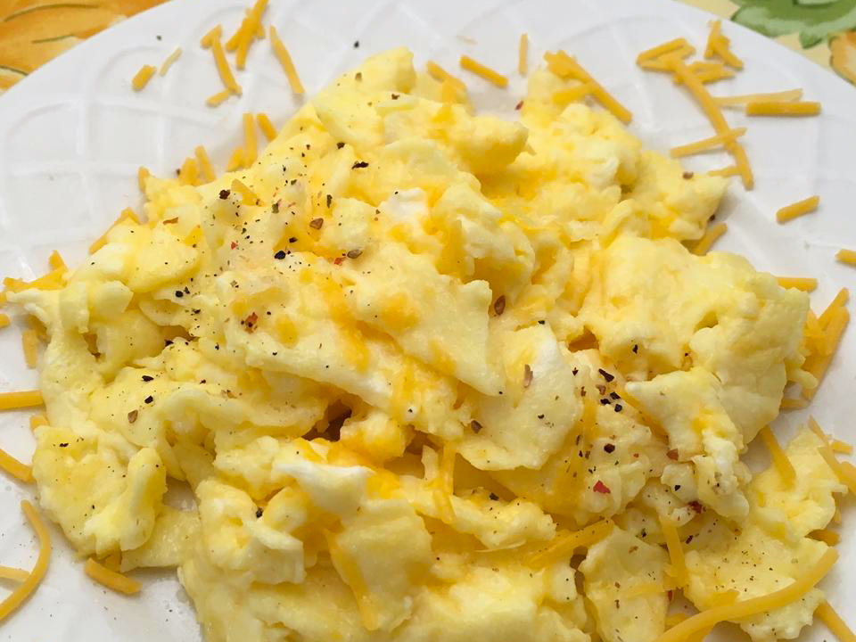

[home]
Scrambled Eggs

Description
Scrambled eggs is a fluffy and delicious egg dish made by gently stirring eggs over a pan, optionally mixed with cream or milk.
You can have them as is or season with salt and pepper.
Ingredients
- 2 large eggs
- 2 thin slices cooked ham, diced (Optional)
- 2 tablespoons sliced Cheddar cheese
- 1 teaspoon heavy whipping cream
- ½ teaspoon butter
Steps
- Whisk eggs in a small bowl until smooth. Mix in ham, Cheddar cheese, and heavy cream.
- Melt butter in a skillet over medium heat. Pour in egg mixture; cook and stir until set but still moist, 3 to 5 minutes.